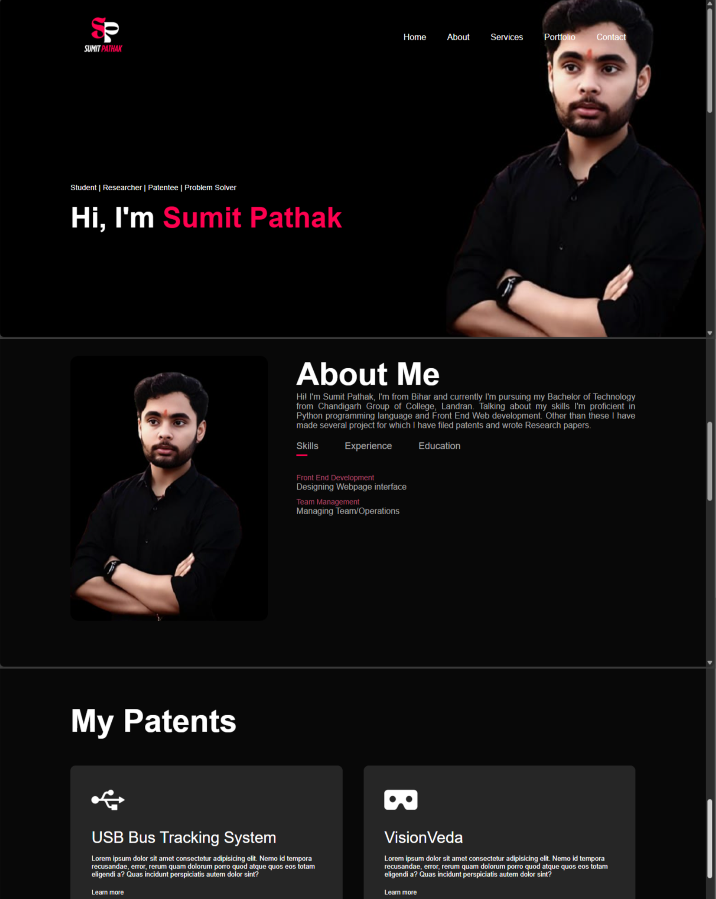
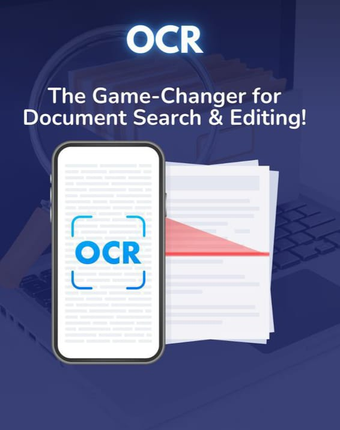

Hotstar Clone

Developed a frontend clone of the popular OTT platform Hotstar, mimicking its user interface,
layout, and user experience. The project showcases skills in responsive web design, dynamic content
rendering, and UI development, offering features like homepage sliders, category-wise content, and a
modern streaming app feel.
🔹 Key Features:
🔹 Technologies Used
HTML | CSS | JavaScript
🔹 Highlights
🔹 Key Features:
- ✔ Home Page: Hero banner with sliders showcasing trending and featured content.
- ✔ Categories: Segregated sections for Movies, TV Shows, Sports, and more.
- ✔ Search Functionality: Allows users to filter and search for titles.
- ✔ Responsive Design: Works seamlessly on desktops, tablets, and mobile devices.
- ✔ Login Page (UI): Designed login/signup interface similar to Hotstar.
🔹 Technologies Used
HTML | CSS | JavaScript
🔹 Highlights
- ✔ Pixel-perfect UI inspired by Hotstar.
- ✔ Smooth animations and hover effects.
- ✔ Emphasis on layout structure and user flow.
- ✔ Ideal for demonstrating frontend development capabilities.
My Portfolio Website

Developed a professional and responsive personal portfolio website to highlight my academic and
technical journey. The website is structured into key sections including Home, About,
Patents,
Research Paper, Projects, and Contact, offering a comprehensive view of my background
and
contributions.
🔹 Key Features:
🔹 Technologies Used
HTML | CSS | JavaScript | Hosting Platform
🔹 Highlights
🔹 Key Features:
- ✔ Home: A visually engaging landing page introducing who I am with quick navigation to other sections.
- ✔ About: Details about my education, skills, interests, and career aspirations.
- ✔ Patents: Showcases intellectual property, including filed or granted patents with brief summaries and statuses.
- ✔ Research Paper: Features academic research work, with links to published papers and conference presentations.
- ✔ Projects: A dynamic gallery of technical projects with descriptions, tools used, and demo or GitHub links.
- ✔ Contact: Interactive contact form and links to email and social media profiles.
🔹 Technologies Used
HTML | CSS | JavaScript | Hosting Platform
🔹 Highlights
- ✔ Fully responsive design across all devices.
- ✔ Smooth scroll and navigation transitions.
- ✔ Clean UI/UX with emphasis on accessibility and performance.
- ✔ Live deployment with regular updates.
OCR using PyTesseract

Developed a Python-based Optical Character Recognition (OCR) and Translation Application designed to
extract, translate, and vocalize text from images and PDF documents. This application offers a
user-friendly graphical interface for seamless document processing, making it especially useful for
users with visual impairments or multilingual needs.
🔹 Key Features:
🔹 Technologies Used
Python | Tkinter | Pytesseract | PyMuPDF (Fitz) | Pillow (PIL) | Pyttsx3 | Googletrans | Tesseract OCR Engine
🔹 Highlights
🔹 Key Features:
- ✔ Image and PDF Text Extraction: Extracts text from various image formats and multi-page PDFs using Tesseract and PyMuPDF.
- ✔ Multilingual Translation: Translates extracted text into multiple languages using the Google Translate API.
- ✔ Text-to-Speech (TTS): Reads aloud extracted or translated text using the Pyttsx3 library.
- ✔ Search Functionality: Enables keyword-based search within extracted content with highlighted results.
- ✔ Interactive GUI: Built with Tkinter, providing a responsive and user-friendly interface with keyboard shortcuts.
🔹 Technologies Used
Python | Tkinter | Pytesseract | PyMuPDF (Fitz) | Pillow (PIL) | Pyttsx3 | Googletrans | Tesseract OCR Engine
🔹 Highlights
- ✔ Fully functional OCR with multilingual translation and offline text-to-speech.
- ✔ GUI built with Tkinter for ease of use and accessibility.
- ✔ Compatible with multiple formats: JPEG, PNG, BMP, and PDF.
- ✔ Responsive and intuitive interface with search and preview features.
- ✔ Future-ready structure with potential for ML integration and cloud support.